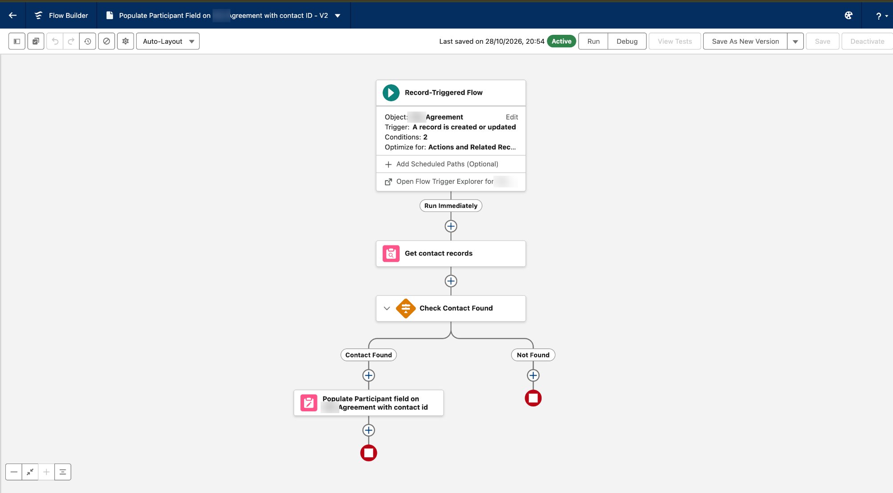
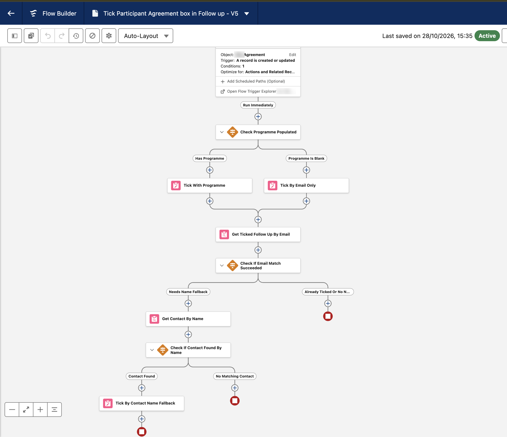
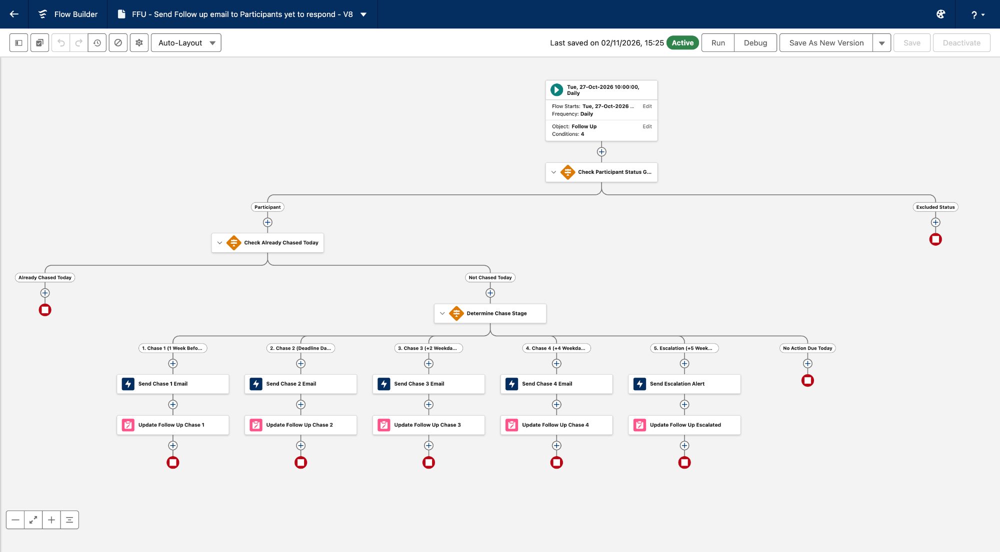
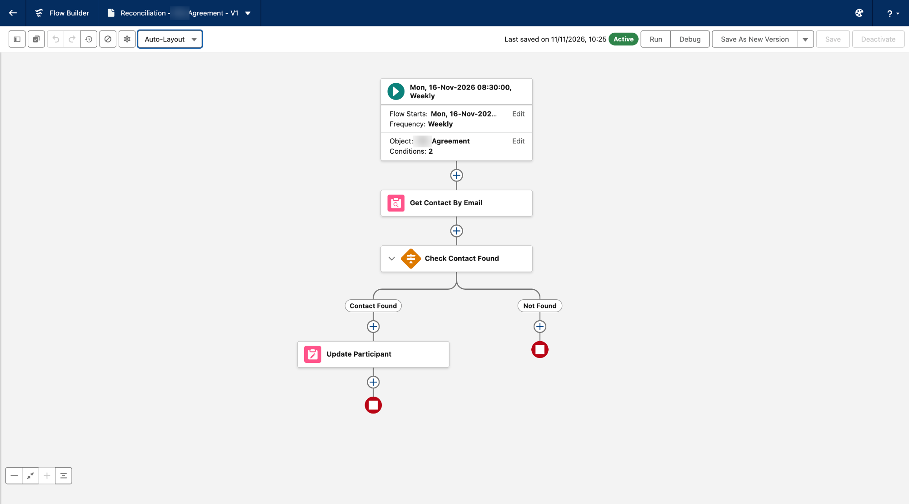

Getting every participant signed before day one: four Salesforce Flows that link, track, chase and reconcile participant agreements, lifting signed-before-start from 67% to 98%.
Every participant must sign a participant agreement before they can start a leadership programme. Cohorts average about 30 participants, and up to 15 cohorts can be recruiting in the same window. Signed agreements arrived from Jotform into a separate Agreement object with no link to the participant’s Contact record, so nobody could see at a glance who had signed. Staff matched agreements to people and chased missing signatures by hand, and only 67% of participants had signed by the time their programme started.
I built the agreement into the participant’s Follow Up record (one record per participant per programme) and automated the whole journey with four Salesforce Flows:
Scale. About 30 participants per cohort, with up to 15 cohorts recruiting at once. The same pattern now runs for every participant survey; see the Survey Follow-Up Framework.
Flow: Populate Participant Field on Agreement with Contact ID

Jotform writes signed agreements into Salesforce without a Contact lookup, so each one sat unconnected to the person who signed it.
When an Agreement record is created or updated without a participant, the flow finds the matching Contact and writes the lookup onto the agreement.
Two entry conditions keep it from re-running on records that are already linked. A decision confirms the Contact was found before updating, so the flow never fails or writes a blank value.
Signed agreements are attached to the right participant as they arrive, with no manual matching.
Flow: Tick Participant Agreement box in Follow Up (v5)

Matching on email alone failed whenever a participant signed from a different address, so signed agreements still showed as missing and people who had signed were chased.
Ticks the Participant Agreement box on the participant’s Follow Up record. It matches on email plus programme when the programme is filled in, or on email alone when it is blank. It then checks the tick landed; if not, it finds the Contact by name and ticks their record instead.
Three-tier matching (email + programme, email only, name fallback) with a check after the first update before falling back. Records that are already ticked, or have no match at all, end cleanly without errors. Now on its fifth version, refined as edge cases came up in live use.
A signed agreement shows as signed even when the participant used a different email address, so nobody who has signed is chased.
Flow: FFU - Send Follow-up email to Participants yet to respond (v8)

Reminders went out by hand, inconsistently, and sometimes to people who had already signed or withdrawn. Late signatures held up programme starts.
Every day at 10:00 the flow checks each participant yet to sign. Chase 1 goes a week before the deadline, Chase 2 on deadline day, Chase 3 two weekdays after and Chase 4 four weekdays after. On the fifth weekday it alerts the programme lead. Each send stamps the chase stage on the Follow Up record.
Guards first: only current participants are chased (excluded statuses stop at once), and never twice in one day. Each stage needs the one before it, so the sequence cannot skip or repeat, and it stops the moment the agreement is ticked.
Nobody chases agreements from spreadsheets any more. Every outstanding participant gets the same reminders on the same days, and the programme lead hears about the stragglers in time to step in.
Flow: Reconciliation - Agreement

Some participants sign before their Contact record exists, for example while their application is still being processed, so the real-time flow has nothing to match.
Every Monday at 08:30 the flow finds agreements still missing a participant, looks up the Contact by email and fills in the link. The tracking flow then ticks the agreement as signed.
Real-time automation plus a weekly sweep means no agreement is left unlinked, without manual data cleaning.
Early signatures are picked up within a week and counted, so the signed count is complete.
The headline figure is the share of participants with a signed agreement before their programme starts.
| Before | After the flows went live |
|---|---|
| 67% of participants had signed their agreement by programme start. | 98% have signed by programme start. |
| Signed agreements sat unlinked to participants, so there was no clear view of who had signed. | Every agreement is linked to its participant as it arrives, and signed status shows on the Follow Up record. |
| Staff chased missing signatures by hand, inconsistently. | Four timed reminders go out automatically, then the programme lead is alerted. |
| People who had already signed, or had withdrawn, were sometimes chased. | Chasing stops the moment the agreement is ticked, and withdrawn participants are never chased. |
Screenshots are from Flow Builder in a production org, with the organisation’s name blurred. No participant data is shown.
Download the Salesforce Flows portfolio (PDF)